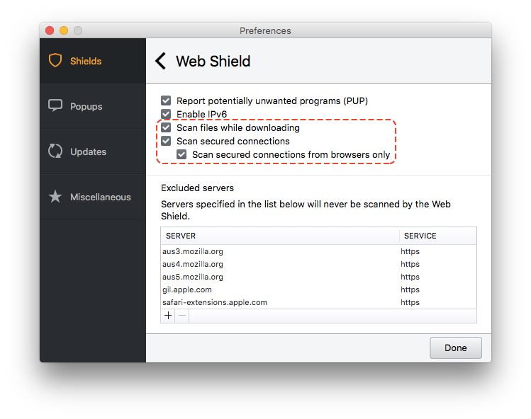

Roman Garcia


This year at work has seen several trial and error attempts at third-party software configuration. Our school makes use of Avast Mac Security 2016. However, from Mavericks to El Capitan, we have also time and again run into roadblocks with Avast, one of which has been pushing updates and navigating the web.
For reasons unknown to me, if the Web Shield is left to its default configuration, Avast will conflict with both Munki and Firefox. Managed Software Center times out, and when the Guest account is used to call any secure website, Firefox will toss cryptic trust certificate error messages. The two offending checkboxes (“Scan files while downloading” and “Scan secured connections”) are pictured below.

It took some poking around, but I eventually realized that Avast (as of version 12.7) stores most of its settings in plain text under /Library/Application Support/Avast/config. In its default state, com.avast.proxy.conf will read:
[web]
ENABLED=1
FLAGS=3
IPV6=1
SCAN_SENSITIVITY="+pup"
SSL=1
Instead of disabling the service entirely, I toyed with the Web Shield’s settings through the GUI for the GUI and watched for file changes. Sure enough, by disabling those two checkboxes, the file now read:
[web]
ENABLED=1
FLAGS=1
IPV6=1
SCAN_SENSITIVITY="+pup"
SSL=0
Of course, the changes won’t take effect immediately. The Avast service will need to be restarted. The GUI won’t register the change until the entire suite has been power cycled.
Once we had our target file, we zipped it up using Packages and pushed it out with Munki. All in all, a less painful and more mundane process than we had initially bargained for.